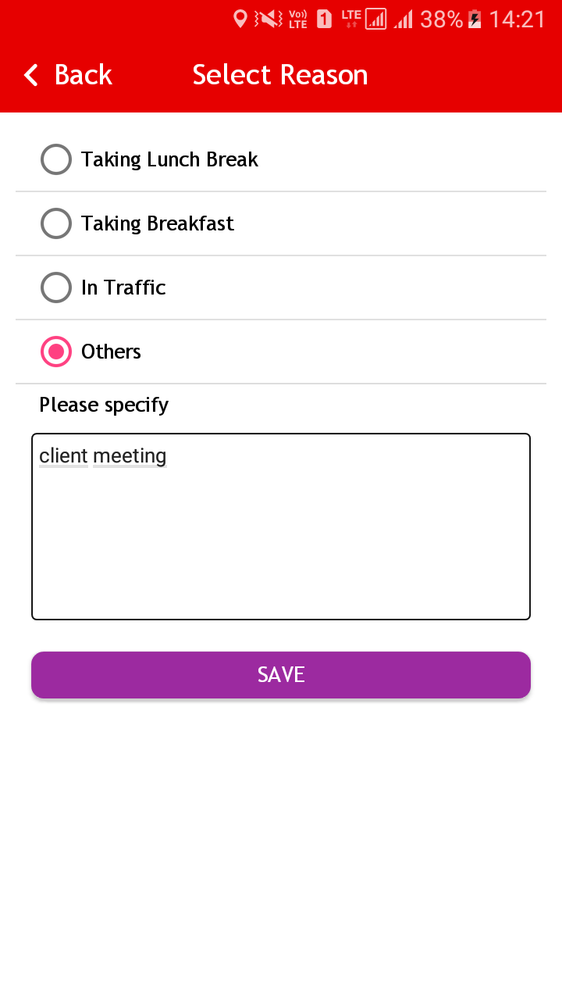

The Vodafone Smart Patroller is a real-time tracking application where Patroller will have to visit a particular route as assigned by his/her reporting manager. The patroller can scan, tags the placed on locations and inform to manager for issues/incidents and the Monitoring Center gets informed in real-time about incidents and events.
Goal of this project as below:
- Create route and assign the created route to patroller by manager.
- Send incident/issue on real time by Patroller through mobile app.
- Gets informed in real-time about incidents and events.
- View Patroller Attendance report.
- In real time Manager can monitor the Patroller’s driving speed, Mobile battery percentage, Current/last known location.
- To check the deviation between the assigned planned path and actual followed path.
2. Application Installation
Follow below steps to install the Vodafone Smart Patroller android application.
- Clicks on provided APK file to install Vodafone Smart Patroller application.
- It will ask to allow installation fromUnknown source (If installation is blocked).
- It will ask to allow installation fromUnknown source (If installation is blocked).
Allow Permission to install app from Unknown source.
- Clicks on Install button.
- It will take a movement to install the application
3. Launch the Application
Clicks on Vodafone Smart Patroller application icon on application menu to start the application.
4. Logging in to Application
- Click on Vodafone Smart Patroller icon on application menu.
- On Clicking the Vodafone Smart Patroller icon, the application starts and display the Login page which contains the following option
- Username
- Password
- Login button
- Enter valid Username and Password and click on the Login button.
- On clicking the Login button, the application validates the information.
- If the information is valid the login is successful and Dashboard is displayed.
5. Dashboard/Home for Patroller.
The dashboard contains the following icons. Each of these icon is a link to the respective section:
- My Task: - My task will have a list of assign route for today’s date.
- Planned Task: - It contains a list of all schedule future routes.
- SOS :- Emergency contact numbers.
- Attendance: - Show the route wise attendance report.
- Self Check-in :- Patroller can create the Route for himself.
- Others :- To view the Help desk, Loyalty points, Support, Bulletin Board and Feedback option.
- Logout: - Logging out from the app
6. My Task
Clicks on My Task option, it will have four tabs as mentioned in below screen.
- Assigned: - Assigned task will display the list of all Assigned task for todays.
- Inprogress: - It will display the route which is currently is intransit.
- Pending :- Display the list of all routes which is not Completed on scheduled date.
- Completed: - Display the list of all completed routes.
7. Planned Task
Clicks on Planned Task option to view all scheduled plan routes for future date as mentioned in below screen.
8. SOS (Save Our Soul)
SOS will have a list of emergency contacts. Clicks on any number to make a call.
9. Attendance
Clicks on Attendance option to view the attendance based on the followed assigned route.
User also can apply the date filter to view the attendance for specific date range.
10. Start Route
Follow below steps to start assigned route
- Clicks on My Task section.
- User will have on Assigned Tab where today’s route plan will be visible.
- Clicks on Globe icon to view the planned path.
Note : If will ask to allow to share your device location if device location is Turn OFF.
Please Turn ON your device location to start the route
User can view the planned path on clicking Globe icon, planned path will display as below.
- Clicks on Start button (as mentioned in above snapshot) to Start the route.
Once you click on Start button, it will ask to capture the image.
Clicks on + (Plus) icon → Camera will Turn ON → Capture the Image → Clicks on OK.
Clicks on Submit button
- Once route is started, it will be moved in Inprogress tab from assigned tab.
11. Pause Route
Follow below steps to Pause the Route
- Clicks on My Task section.
- Tab to Inprogress.
- Clicks on Globe icon to view the inprogress route
- Clicks on Pause button, it will ask confirmation to pause the route. Clicks OK on it.
- Select a Pause Reason and clicks on Save button.

After Clicking on Save button it will Prompt to upload image.
Navigation:
Select a Pause Reason → Clicks on Save → Upload image option will get open (clicks on + icon) → capture the Image → Clicks on OK. → Clicks on Submit button.
- After Pause action, Pause button will be change to Resume and End button will visible in disable mode.
12. Resume Route
Follow below steps to Resume the Route
- Clicks on My Task section.
- Tab to Inprogress.
- Clicks on Globe icon to view the inprogress route
- Clicks on Resume Button to continue routing.
- Resume button will be changed to Pause and End option will be in enabled mode.
13. Selfie Upload
Follow below steps to Upload the Selfie while patrolling.
- Clicks on My Task section.
- Tab to Inprogress.
- Clicks on Globe icon to view the inprogress route
- Clicks on Selfie icon.
- Capture the Image and Clicks YES.
14. Upload Document while Patrolling
Patroller has an option to upload document while patrolling. Uploading document option would be available for inprogress route only.
Follow below steps to Upload Document :
- Clicks on My Task section.
- Tab to Inprogress.
- Clicks on Globe icon to view the inprogress route
- Clicks on + Icon (it is visible on top right corner).
- Select a file which you want to upload, Mention the comment and clicks on OK.
15. Halt Point Check-In
Halt Point would be visible on planned route. Patroller can check-in on that halt point followed by below steps:
- Tab to Inprogress.
- Clicks on Globe icon to view the inprogress route
Clicks on Halt Point. (If Patroller’s current location is in defined buffer limit of Halt point then only patroller can able to checkin on halt point otherwise it will prompt the message “You are not in buffer limit to checkin this halt point) Clicks on YES → Upload image option will get open (clicks on + icon) → capture the Image → Clicks on OK. → Clicks on Submit button.
Halt point color would be changed to yellow where Patroller has checked-In
Note:
- CheckIn will allow only in defined buffer limit.
- Patroller cannot checkin another Halt point if any halt point is already checkedIn.
16. Halt Point Check-Out
Checked-In Halt Point would be visible in Yellow color. Patroller can check-out on that halt point followed by below steps:
Clicks on Halt point which is already Checked-In → Clicks on YES → Capture the checkout image → Submit the checkout image
Halt point color would be changed to Green if patroller has successfully checked-Out.
17. Raise Issue
Patroller has an option to raise the issue while patrolling followed by below steps:
Note : Raise issue option will only application for Inprogress route.
- Clicks on My Task section.
- Tab to Inprogress.
- Clicks on Globe icon to view the inprogress route.
- Clicks on Raise Issue option (it is visible on top right corner).
- Select the reason for issue and mention the issue remarks and clicks on Save button.
- Capture the Image and Submit.
18. End Route
Follow below steps to End the Route
- Clicks on My Task section.
- Tab to Inprogress.
- Clicks on Globe icon to view the inprogress route
- Clicks on End Button to stop routing. Confirmation message will prompt to stop the routing. Clicks OK on it.
- Capture the image and submit the same.
- Once route is End, it will be moved in Completed tab from Inprogress tab.
19. View Planned Path vs Actual Path
Follow below steps to view the Planned vs actual route which is followed while routing.
- Clicks on My Task section.
- Tab to Completed.
- Clicks on Globe icon, Planned route will be shown in blue color and Green color indicates the actual route. S points indicate the start point while E indicates the End point.
20. Create Self Check-in Route
Follow below steps to create the Self checkin Route.
- Clicks on Self Check-in option.
- Fill the mandatory details and clicks on Submit button.
- Once Patroller Submit the Self Check-in route, Request goes to respective manager for approval.
Self checkin route have following status.
- Pending –If No action is taken by reporting manager
- Approval- If it is approved by Manager
- Rejected –If request has been rejected by Manager
Once Self Check-in route is approved, same will be visible in Assigned task where patroller can start the route.